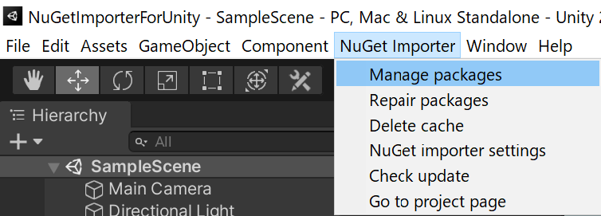
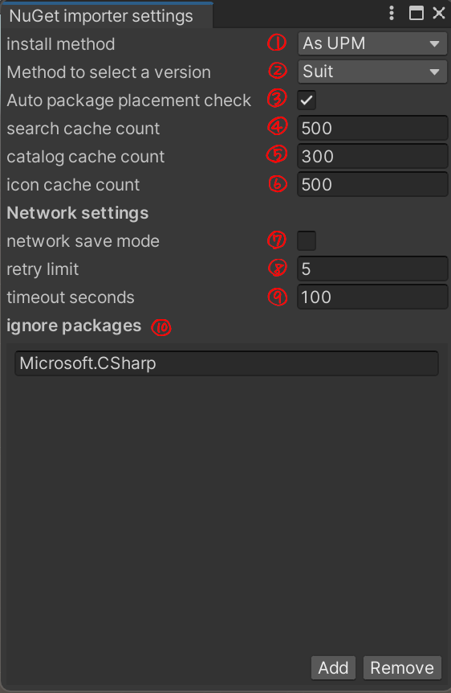

使い方
インストール方法
パッケージをインストールするには、UPM (Unity Package Manager) を利用する、または、.unitypackage をインポートするの二通りがあります。
UPM (Unity Package Manager) を使う
UPMを使って導入するには、この Git URL を指定する。または、OpenUPM を使って導入するという二通りあります。
Git URL を指定する
- Package Manager ウィンドウを開く
- ステータスバーの Add (+) ボタンをクリック
- Add package from git URL を選択
- 「
https://github.com/kumaS-nu/NuGet-importer-for-Unity.git?path=NuGetImporterForUnity/Packages/NuGet Importer」または「git@github.com:kumaS-nu/NuGet-importer-for-Unity.git?path=NuGetImporterForUnity/Packages/NuGet Importer」を入力 - Add をクリック
詳細は公式ページ(Git URL からのインストール - Unity)をご覧ください。
OpenUPM を利用する
- OpenUPM-CLI をインストールしていない場合は、以下のコマンドで OpenUPM-CLI をインストールする。(Node.js 12が必要です。)
npm install -g openupm-cli - インストールする予定のプロジェクトのフォルダへ移動する。
- 以下のコマンドで、プロジェクトにインストールする。
openupm add org.kumas.nuget-importer
詳細は公式ページ(Getting Started with OpenUPM-CLI - OpenUPM)をご覧ください。
.unitypackage で導入する
- リリースページへ行き、必要なバージョンのzipファイルをダウンロードする。
- zipファイルを解凍し、中の .unitypackage をプロジェクトにインポートする。
.gitignoreの設定
インストールしたパッケージは Git の監理外にしたいと思います。その場合は、.gitignoreに以下を追加してください。インストールしたパッケージ一覧はAsset/package.configで管理され、このファイルを共有すればパッケージの復元ができます。
# NuGet importer
/[Aa]ssets/[Pp]ackages.meta
/[Aa]ssets/[Pp]ackages/
/[Nn]u[Gg]et/
/[Pp]ackages/*/
!/[Pp]ackages/your embedded package to share with git/
Unityでの使い方
メニューアイテム

- Manage packages ・・・ パッケージを管理するメインウィンドウを表示する。
- Repair packages ・・・ インストールされていないパッケージを修復する。
- Delete cache ・・・ キャッシュを削除する。（ただし、アセンブリがロードされるたびにキャッシュは消える。）
- NuGet importer settings ・・・ NuGet importer に関する設定をするウィンドウを表示する。
- Check update ・・・ 更新があるか確認する。
- Go to project page ・・・ NuGet importer for Unity の Web ページを開く。
メインウィンドウ

- NuGet から検索するときのモード。
- インストールされているものから検索するときのモード。
- 非安定版も含めるかどうか。
- 検索語句の入力場所。（インクリメンタルサーチされる。）
- 検索結果。
- パッケージの詳細情報。
- バージョン選択。
- パッケージに対する操作。
NuGet importer の設定

- インストール先を指定する。（UPMを推奨。）
- 依存関係のバージョン決定方法を指定する。（Suitを推奨。）
- 起動時にパッケージがインストールされているか確認するか。パッケージのディレクトリが存在すればインストール済みと判断。インストールされていないパッケージを見つけた場合、自動的に修復する。（オンを推奨。）
- 検索結果のキャッシュする最大数。（0以下はキャッシュしない。）
- カタログのキャッシュする最大数。（0以下はキャッシュしない。）
- アイコンのキャッシュする最大数。（0以下はキャッシュしない。）
- 通信のデータ量を少なくするモードか。オンの場合、インストールされていないパッケージの画像が取得されなくなり、入力が落ち着くまでパッケージ検索が行われなくなります。
- 通信失敗時に再度通信を試みる最大数。
- 通信のタイムアウトとする秒数。
注意点
実行時に必要なファイル以外（例：ルールセットやドキュメントなど）は (your project)/NuGet 以下に配置されます。参照する際は手動で追加してください。
このパッケージを導入する際、以下の変更を加えます。
PlayerSettings -> assemblyVersionValidationをオフに。（NuGet と同様にアセンブリ参照のバージョンの同一性をチェックしなくさせるため。）System.IO.Compression.FileSystem.dllを参照に追加。（NuGet importer for Unity が Zip ファイルを扱うため。）